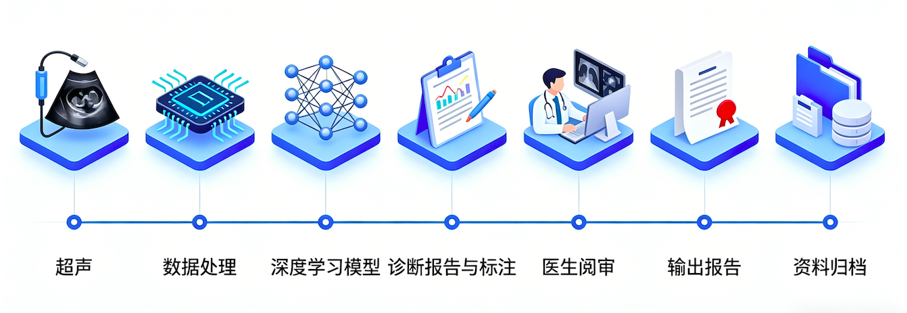

不换现有超声设备、无需复杂培训，让基层医院/体检中心轻松拥有三甲级胃胰造影诊断能力
阿尔麦德 · 医学影像 AI 诊断创新者 | 胃胰疾病早筛完整技术体系
我们是医学影像 AI 诊断创新者，专注于胃胰疾病早筛领域，依托"口服超声造影剂+AI 多智能体诊断"，构建从检查到报告、从培训到服务的完整技术体系，让三甲医院的增强造影能力，下沉到每一家基层医疗机构和体检中心。
AIMED 完整解决方案 = 3 款专用造影剂 + 1 套标准化流程 + 1 个 AI 诊断服务平台
胰腺型/胃肠型/胆管型，安全无创，显著提升成像质量。30 年研发积淀，覆盖 1000+ 医院，培训 10000+ 医生。
无需复杂操作，医生快速上手，流程可复制、可落地。
自动辅助分析超声图像，降低阅片压力，提升诊断准确率。
喝一杯造影剂 → 做常规超声检查 → AI 辅助分析标注 → 医生快速阅审 → 10 分钟出具合规报告
从造影剂到 AI 诊断，构建完整的胃胰疾病早筛体系
胰腺型、胃肠型、胆管型三款专用造影剂，安全无创、无辐射，无需插管，患者接受度高；能显著提升超声成像质量，让胃、胰、胆管等器官病灶更清晰，助力医生精准识别。30 年研发积淀，已覆盖全国 1000+ 医院，培训专项医生 10000+ 名，临床应用成熟。
7 步标准化阅片流程，全程 AI 辅助，降低医生工作压力，提升诊断效率和准确率：① 超声图像采集 → ② 数据自动处理 → ③ 深度学习模型分析 → ④ 生成初步诊断报告 → ⑤ 医生阅审修正 → ⑥ 输出合规报告 → ⑦ 资料归档留存。目前 AI 诊断准确率目标≥85%，依托多中心临床数据持续优化。
整合海量医疗知识库 + 图像智能分割技术，医生诊断前可自动检索相似病例，参考过往诊疗经验，进一步提升诊断准确率，减少漏诊、误诊，尤其适合基层医生提升诊疗能力。
采用区块链技术，实现医护人员身份注册上链存证、诊断报告可信存证，确保检查数据、报告内容不可篡改、可追溯，符合医疗合规要求，规避医疗纠纷风险。
构建全方位胃胰疾病早筛体系，助力基层医疗能力提升
面向有消化道症状（胃痛、腹胀、消化不良等）的就诊人群，开展胃胰疾病临床诊断应用；无需更换现有超声设备，快速新增胃胰早筛项目，提升科室诊疗能力和收入；AI 辅助降低基层医生阅片压力，验证 AI 辅助诊断在真实医疗场景中的准确性，助力基层医疗能力提升。
面向无症状健康人群，新增胃胰疾病早筛特色项目，打造差异化体检服务，提升体检机构竞争力；无创、快捷、无辐射，用户接受度高，可提升体检客户复购率和转介绍率；探索 AI 辅助筛查在体检场景中的价值，帮助体检人群实现胃胰疾病早发现、早干预。
针对慢性胃炎、胃溃疡、胰腺炎等高危人群，建立定期随访机制；通过 AI 辅助诊断，快速监测疾病进展，实现早期预警，帮助医生及时调整诊疗方案，降低疾病恶化风险，提升慢病管理质量。
配合政府公共卫生项目，开展区域性胃胰疾病普查；低成本、高依从性、可移动筛查，适合大规模人群排查；建立标准化疾病数据库，为区域公共卫生决策提供精准数据支撑，助力公共卫生防控体系完善。
补充医疗客户最看重的"实锤证据"，打消合作顾虑
左侧：普通超声图像（病灶模糊，难以识别）
右侧：口服造影剂后超声图像（病灶清晰，AI 自动标注）
配图下方加简短说明，突出造影剂+AI 的优势
包含患者基本信息（打码）、检查部位、AI 标注结果、医生阅审意见、报告结论
体现合规性和完整性，打码脱敏展示
新增胃胰早筛项目后，体检客户复购率提升 15%，新增营收 20%+
AI 辅助诊断后，超声科阅片效率提升 60%，漏诊率下降 35%
面向医院、体检中心、科研机构开放协作，共建胃胰疾病早筛生态
提升超声诊断能力
获得 AI 辅助诊断系统使用权，提升超声科诊断效率和准确性，支持多中心数据协作与学术联合发表。
增加早筛服务项目
快速部署口服超声造影早筛方案，增加胃胰疾病早筛特色项目，提升体检服务差异化竞争力。
共享数据集和算法
接入多中心标注数据集，共享 AI 算法模型，联合申报科研项目，推动学术成果转化。
多中心数据协作，共建高质量标注数据集
4 套 AI 系统自动切换，诊断准确率≥85%
联合发表论文，共享知识产权与学术荣誉
区块链智能合约自动分配，收益透明可追溯
提交资质认证
选择协作项目
数据采集与诊断
智能合约自动分配
与顶尖医疗机构、高校深度合作，推动技术临床转化，验证方案可行性，共建胃胰早筛生态
联合开展多模态医学影像分析、深度学习模型优化，助力 AI 诊断准确率持续提升，为技术创新提供核心支撑。
提供高质量病例数据与专家标注支持，开展 AI 诊断技术临床验证，推动技术从实验室走向临床落地。
面向有症状就诊人群，开展 AI 辅助诊断真实场景验证，优化标准化检查流程，为基层医院落地提供可复制经验。
面向无症状健康人群，开展胃胰早筛普筛试点，验证 AI 辅助筛查在体检场景的价值，打造体检特色项目标杆。
目前已在湖州多家医院、体检中心落地试点，方案可复制、可快速部署，逐步实现全国规模化覆盖
聚焦胃 + 胰腺双核心脏器，累计完成 5000+ 标注病例验证，AI 诊断准确率≥85%；在湖州地区多家医院、体检中心试点运行，优化流程、验证可行性。
扩展胆管 + 食道筛查范围，完成二类医疗器械备案，优化产品体验；在全国多个省份开展试点合作，完善培训、运营支持体系，实现方案标准化复制。
申报 NMPA 三类医疗器械证书，提升产品合规性；全面覆盖全国基层医疗机构、体检中心，打造全国领先的胃胰早筛生态。

统一入口 · 多角色适配 · 区块链身份 · 数字资产
多租户 · 角色权限 · 数据治理 · 区块链存证
多租户隔离，企业级数据治理。支持公司信息管理、生态伙伴管理、知识库管理。
四级权限体系：生态总监 → 管理员 → 编辑者 → 访客。JWT Token 认证，服务端鉴权。
病例数据库管理、影像数据上传、统计报表生成。数据上链存证，不可篡改。
DID 身份注册、证据存证、链上验证。FISCO BCOS 多链适配。
无论您是医院、体检中心、科研机构，还是想了解合作细节，均可通过以下方式快速对接，我们将在 1 个工作日内回复。
XXX-XXXXXXX
方便快速沟通
XXX
备注"阿尔麦德合作"
📍 地址：智慧城市医疗 湖州模式（可补充具体地址，提升可信度）